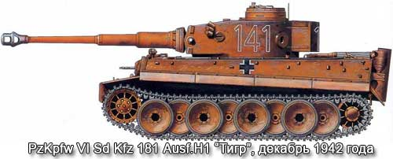
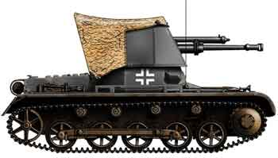

Важкі танки

Начиная с 1937 года немецкии генеральный штаб требовал более тяжелый и мощный танк, чем строившиеся тогда серийные PzKpfw III и IV. Его боевая масса должна была быть не меньше 30 т, и ему отводилась роль танка прорыва. Но с разработкой новой машины не торопились. Однако в 1940 году стало ясно, что PzKpfw III и IV не в состоянии справиться с толстой броней французских и английских танков. Еще более неприятный сюрприз преподнесли вермахту через год советские Т-34 и КВ. В сложившейся ситуации был объявлен конкурс на тяжелый танк, вооруженный мощной 88-мм пушкой с высокой начальной скоростью снаряда. Орудие должно было устанавливаться в башне кругового вращения.
 "Королевский тигр" - последний немецкий тяжелый танк - называли гибридом между "Элефантом" и "Пантерой". От первого он получил знаменитую 88-мм пушку, а от второй - форму корпуса с рациональными углами наклона броневых листов. Появился этот танк как результат настойчивого желания Управления вооружений вермахта и самого фюрера вооружить танк отработанной конструктивно, мощной-зенитной пушкой. Тем самым будущему танку предназначалась роль истребителя танков..
"Королевский тигр" - последний немецкий тяжелый танк - называли гибридом между "Элефантом" и "Пантерой". От первого он получил знаменитую 88-мм пушку, а от второй - форму корпуса с рациональными углами наклона броневых листов. Появился этот танк как результат настойчивого желания Управления вооружений вермахта и самого фюрера вооружить танк отработанной конструктивно, мощной-зенитной пушкой. Тем самым будущему танку предназначалась роль истребителя танков..
Самохідні протитанкові знаряддя

моходная установка была создана в конце 1939 года как средство противотанковой обороны на шасси танка Т-I, вооружение и бронирование которого были признаны недостаточными. Вместо башни танка была смонтирована открытая сверху и сзади и бронированная боевая рубка с установленной в ней 47-мм противотанковой пушкой чехословацкого производства. Бронебойный снаряд этой пушки на расстоянии 500 м пробивал броню толщиной 70-мм, что делало самоходную установку чрезвычайно опасной для большинства танков, применявшихся на начальном этапе Второй мировой войны.
 "Мардер" III выпускались в двух вариантах - Ausf.Н и Ausf.М, которые собирались соответственно на шасси танков "Panzerkampfwagen" 38(t) Ausf.Н и Ausf.М. Противотанковые самоходно-артиллерийские установки обозначались 7,5cm РаК40/3 auf PzKpfw 38(t) Ausf.H и "Panzerjager" 38(t) mit 7,5 cm PaK40/3 Ausf.M. Оба варианта вооружались пушками 75 mm РаК40/3 L/46, экипаж - 4 человека. На самоходках Ausf.Н ("Heckmotor" - задний двигатель) боевое отделение находилось в средней части машины, на Ausf.М ("Mitte" - двигатель в середине) - в кормовой части корпуса.
"Мардер" III выпускались в двух вариантах - Ausf.Н и Ausf.М, которые собирались соответственно на шасси танков "Panzerkampfwagen" 38(t) Ausf.Н и Ausf.М. Противотанковые самоходно-артиллерийские установки обозначались 7,5cm РаК40/3 auf PzKpfw 38(t) Ausf.H и "Panzerjager" 38(t) mit 7,5 cm PaK40/3 Ausf.M. Оба варианта вооружались пушками 75 mm РаК40/3 L/46, экипаж - 4 человека. На самоходках Ausf.Н ("Heckmotor" - задний двигатель) боевое отделение находилось в средней части машины, на Ausf.М ("Mitte" - двигатель в середине) - в кормовой части корпуса.